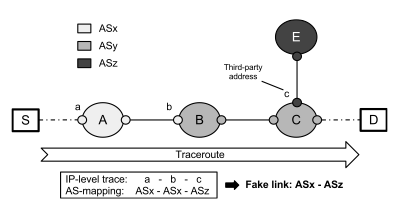

An accurate knowledge of the Internet topology is essential for a deep understanding of such a complex and ever-evolving system. In the last decade many attempts have been done to overcome the incompleteness of BGP-derived AS-level topologies using traceroute. One source of inaccuracy is represented by third-party (TP) addresses.
Problem and impact
TP addresses are associated to interfaces which are not actually traversed by the IP packets sent toward the traceroute destination. In fact, according to RFC 1812, the source address of an ICMP error packet should correspond to the outgoing interface of the ICMP reply, rather than the interface on which the packet triggering the error was received. This behavior can cause a traceroute IP path to include a TP address. For instance, in the following figure the trace from a source S to a destination D contains the sequence (a,b,c) of IP addresses, where a and b are associated to the incoming interfaces of router A and B respectively while c is the interface used by router C to send ICMP replies to the traceroute originator, i.e. it is a third-party IP.

The occurrence of TP addresses can have a significant impact on some traceroute applications. The major impact is related to the inference of AS-level links from traceroute traces because TP addresses may cause the inference of false AS links. In figure, if b belongs to ASx and c belongs to ASz addressing space, then the IP-to-AS mapping of the trace will induce the wrong inference of the link ASx-ASz, while ASy, tough traversed, is totally hidden.
TP addresses may also impact subnet positioning and alias resolution.
Our Proposal
To solve the TP address problem we propose the first active probing technique able to directly detect the presence of TP addresses in traceroute IP path. The technique requires two probes to understand if an IP address discovered by traceroute lies on the path (OP) or not (TP).
TP address detection technique is based in the IP prespecified timestamp option and requires no previous knowledge about routers interfaces, nor AS path provided by BGP or IP-to-AS mapping. Hereafter we adopt the notation PROBE X|ABCD, where PROBE is the probe type, X is the targeted destination and ABCD is the ordered list of prespecified IPs from which a timestamp is requested.
In order to understand if the hop Y discovered by traceroute toward D is a TP address, the proposed technique works according to the following steps:
- Y is targeted with an ICMP Echo Request Y|YYYY probe to verify if it is cassifiable or not:
- Y is classifiable when it provides between 1-3 timestamps;
- Y is not classifiable otherwise.
- if Y is classifiable, D is targeted with UDP D|YYYY, so if the TS option brought back into the payload of the ICMP Port Unreachable message contains at least one timestamp, Y is classified as OP, otherwise it is a TP address.
The first step is necessary because there are other less common router behaviors that may lead the technique to misleading results. Indeed, adopting a conservative approach, a traceroute hop Y is considered non-classifiable every time there is no clear evidence that its router has a per network interface stamping behavior, as in the following circumstances:
- Y is a part of a private addressing block;
- no reply is received from Y and the targeted device dropped the probe or the reply was filtered along the path;
- the reply message is received from Y but it contains no TS option;
- the targeted device ignores the TS option, without inserting any timestamp in the reply;
- the targeted device provides 4 timestamps.
In other words, a traceroute hop Y is considered classifiable only if it provides from 1 to 3 timestamps when directly probed with ICMP Echo Request Y|YYYY.
The Code
We also implemented and made publicly available an enhanced GNU GPLv3 traceroute version, based on Paris-Traceroute, which applies our technique to classify the hops discovered along the path toward the destination. Click here for the code and documentation.
Experimental evaluation
Performing a large scale measurement campaign, we evaluate the technique showing that:
- the same IP address may be a TP or not depending on both the source and the destination of the IP path;
- TP addresses affect 17% of the AS links extracted from our dataset;
- TP addresses appear in a significant portion of the detected AS-level loops.
After removing the traces affected by filtering, the final dataset consisted of ~12M traces for a total number of ~ 443K addresses. The obtained results highlight an unexpected general trend: most traceroute traces contain many more TP than OP addresses. Hence, according to the router behaviour desribed above, most of the intermediate routers encountered along the path reply to the traceroute originator using an interface different from the ones traversed by the packets sent to the targeted destination.
Dataset
Our dataset is publicly available at this link: http://traffic.comics.unina.it/tpa/pam2013_dataset.tgz
Citing
When refering to our active probing technique or/and its implementation or the dataset please cite the following Reference:- Pietro Marchetta, Walter de Donato, Antonio Pescapè, "Detecting Third-party Addresses in Traceroute Traces with IP Timestamp Option", PAM 2013, Hong Kong, China, March 18-20, 2013.
Publications
- Pietro Marchetta, Walter de Donato, Antonio Pescapè, "Detecting Third-party Addresses in Traceroute Traces with IP Timestamp Option", PAM 2013, Hong Kong, China, March 18-20, 2013.
- Pietro Marchetta, Walter de Donato, Antonio Pescapè, "Detecting Third-party Addresses in Traceroute IP Paths ", ACM SIGCOMM 2012, Helsinki, Finland, August 13-17, 2012. Best Poster SIGCOMM 2012.